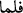

inanıyorsanız, îmânınız size ne kötü şeyler emrediyor!
Allah katından gelen kitap Kur’ân’dır. Tevhîd ve diğer bir kısım şer’î hükümler de
Tevrât’a uygundur. İbnü’t-Temcîd, Kur’ân’ın Tevrât’ı doğrulamasından maksadın,
ondaki Peygamber Efendimiz’in nübüvvetine dâir bir takım işâret ve sıfatları
doğrulaması olduğunu söyler. Ondaki hükümlerin tamamını doğrulaması değildir. Çünkü
Kur’ân, Tevrât’ın büyük bir kısmını neshetmiştir. Muhammed Mustafâ’nın nübüvvetle
gelmesinden önce Yahûdîler Arap müşrikleri ve Mekke kâfirlerine karşı Allah’dan
“Peygamberimiz’in yüzü suyu hürmetine yardım istiyor” ve: “Ya Rabbi sıfatlarını
Tevrât’ta gördüğümüz âhır zamanda gönderilecek peygamberin yüzü suyu hürmetine
bize yardım et” diyorlardı. Düşmanlarına karşı da “Dediklerimizi doğrulayacak bir
nebînin gelmesi ve böylece bizim de sizi kendisiyle birlikte Âd ve İrem halkı gibi yok
edeceğimiz zaman yaklaşmıştır.” şeklinde konuşuyorlardı. “O bildikleri onlara gelince”
ibâresiyle bildikleri şeye “kitap” denmiştir. Çünkü kitabın indirildiği kimseyi tanımak
onun getirdiği kitabı da tanımak anlamına gelir.
( __WORD__ )’nın başındaki “fâ” harfi, yahûdîlerin müşriklere karşı istimdâdda bulundukları
süreyle Peygamberimiz’in nübüvveti arasında uzun bir süre bulunmadığını göstermek
için getirilmiş “ta’kîbiye”dir
“Hasedle ve riyâset hırsıyla Hz. Peygamber’i inkâr ettiler ve sıfatlarını değiştirdiler”
“Allah’ın lâ’neti de işte bu kâfirler üzerinedir.” Burada, sâdece zamîr ile onlara
işâret etmek yerine, açıkça “kâfirlerin üzerinedir” diye belirtilmiştir. Bu da onların
lâ’nete müstehak olmalarının küfürleri sebebiyle olduğunu göstermek içindir. Yine
baştaki “fâ” ( __WORD__ ) harfi, lâ’netin küfürden sonra olduğunu göstermek için gelmiştir.
Kâfirler hakkındaki lâ’net; rahmet ve cennetten uzaklaştırılmalarıdır. Mü’minlerden
günahkâr olanlar hakkındaki lâ’net ise; Cenâb-ı Hakk’ın günahları çok olmayan
mü’minlere va’d ettiği üstün lütuflardan bunları mahrûm bırakmasıdır. Meselâ
Peygamber Efendimiz’in (s.a.): “Elindeki malı pahalılık zamanında satmak için
saklayan mel’ûndur”[330] hadîsindeki günah bu tür lâ’neti gerektiren günahlardandır.
Böyle insanlar için “İyilerin derecelerinden mahrûmdur” denebilir. Yoksa Allah’ın
rahmetinden mahrûm olmak mânâsına gelmez.
Şunu bilmelisin ki lâ’neti gerektiren şeyler “küfür, bid’at ve fısk” olmak üzere üçtür.
Ve her bir derece için de üç mertebe vardır. Birincisi; genel olarak lâ’nettir. “Allah’ın
lâ’neti tüm fâsıklar, kâfirler ve bid’at ehli üzerine olsun” demek gibidir. İkincisi; birinci
kısımdan daha özel bir bölümünü ihtivâ eder. “Allah’ın lâ’neti yahûdî ve hıristiyanlar
veya Kaderiyye, Hâriciyye ve Râfiziyye veya zinâ edenler, zâlimler ve fâiz yiyenler
üzerine olsun” demek gibidir. Bu tür lâ’netler câizdir. Üçüncüsü; muayyen bir şahsa
lâ’net etmektir. Bu da küfrü sâbit olanlar için câizdir. “Allah’ın lâ’neti Fir’avn ve Ebû
Cehl’in üzerine olsun” demek bu kısma girer. Çünkü bu ikisinin küfr üzerine öldüğü
şer’an bilinmektedir. Fakat şer’an küfrü hakkında herhangi bir dayanak olmayan Zeyd